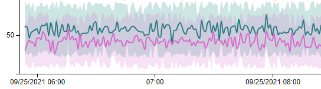
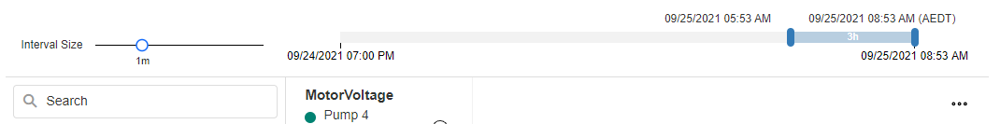
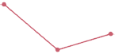
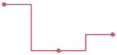
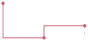
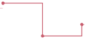

Azure Digital Twin Hierarchy
The Azure Digital Twin Hierarchy is an interactive UI component that visualizes a large amount of time-oriented data. It allows the user to compare data at run-time based on asset ID by dropping markers on the chart, as well as panning and zooming, and can show or hide specific assets or parameters via the hierarchy panel.
Azure Digital Twin Hierarchy connects directly to Azure through its Azure Digital Twin, Azure Data Explorer, Tenant Id, Client Id, and Client Secret.
Azure Digital Twin Hierarchy Properties
Appearance
Common Properties
The visibility property is common to most Blocks;
See the Common Properties article for more details on common appearance properties.
X Axis Label Format
Determines how the date is formatted on the x-axis of the chart and pan & zoom panel.
| Label Format | Image |
|---|---|
| 12-Hour Clock (2 Lines) |  |
| 12-Hour Clock (1 Line) |  |
| 24-Hour Clock (2 Lines) |  |
| 24-Hour Clock (1 Line) |  |
Enable Display Grid
This determines whether the ellipsis menu contains the Display Grid option, which shows the selected data in a grid.
Enable Download as CSV
This determines whether the ellipsis menu contains the Download as CSV option, which allows you to download the selected data as a CSV file.
Pan & Zoom Mode
Decide how the Pan & Zoom panel is displayed: "Hidden" removes the panel entirely, "Compact" is a single-line component, and "Full" displays a Pan & Zoom with secondary panning and zooming for fine-tuning the selection.
| Pan & Zoom Mode | Image |
|---|---|
| Full |  |
| Compact |  |
| Hidden |  |
Pan & Zoom Color
The color of the Pan & Zoom component.
Interval Size
The default value for the Interval Size slider, which allows you to fine-tune the granularity of the displayed data. The displayed line chart data will be averaged over this interval.
Range
This determines the starting date for the Pan & Zoom. The end date of the Azure Digital Twin Hierarchy is determined by the time when the block is loaded. The Pan & Zoom range will update automatically with live data.
Initial Selection
This determines the time interval that is initially selected in the Pan & Zoom component and, correspondingly, the line chart. The selection will always start at the right side of the Pan & Zoom component.
Display Avg, Min, Max, and Envelope
This determines whether the line chart will display only the average values as a plain line, or the minimum, maximum, and envelope over the selected Interval Size.
Show Tooltip On Hover
This determines whether a tooltip will appear when the cursor hovers over a line. The tooltip will display the values of the hovered point on the line.

Enable Zoom
This determines whether you can click and select on the chart to zoom into the selection.
Show X Axis
This determines whether the x-axis line and labels for the line chart are shown.
Show Y Axis
This determines whether the y-axis line and labels for the line chart are shown.

Default Y Axis Type
This determines the default Y Axis type, which can be changed at run-time using the button at the top-left corner of the line chart. The options are:
- Stacked: the selected parameters are separated into different panes stacked vertically.
- Shared: the selected parameters share a single pane with a single y-axis from the lowest to highest values in any line.
- Overlap: the selected parameters share a single pane with multiple y-axes, with the lowest and highest value of each line chart displayed on the axis at the bottom and top.
Show Dots
This determines whether the points on the lines will display as dots.

Interpolation Function
This property allows you to define how the lines behave in the line charts.
| Function | Line |
|---|---|
| Monotone X |  |
| Linear |  |
| Step |  |
| Step Before |  |
| Step After |  |
| Basis |  |
| Cardinal |  |
| Catmull-Rom |  |
Palette
You can override the default colors by adding custom colors.
The colors are used for each parameter in the line chart. If the number of parameters is greater than the number of colors specified, the colors will repeat.
Behavior
Default Selection
It shows the hierarchy tree view and it allows the user to pre-select the assets.
Note
The Data Source section needs to be filled out and authenticated before selecting.
Recommendations
The Alerts for selected Recommendations will be displayed at run-time as markers on the chart: the Alert's created time is used as the timestamp and its title as the text.
Note
Known limitations:
- The marker title space is limited and the Alert title may be truncated.
- Some HTML special characters (e.g.
<) used in the Alert title will be encoded.
Show Alerts For Visible Assets Only
Tick to apply the selected Assets as a filter on the Recommendation Alerts.
Data Source
Use Variables
This allows you to choose between manually entering the Endpoints, Tenant Id, Client Id, and Secret, or selecting them from static variables.
Azure Data Explorer Endpoint
Requires the URL to the Azure Data Explorer site.
Azure Digital Twin Endpoint
Requires the URL to the Azure Digital Twin models.
Tenant Id
Requires the Azure Active Directory Tenant Id.
Client Id
Requires the Azure Application Client Id.
Client Secret
Requires the Azure Application Client Secret.
Database
After the above details are verified and authenticated, a Database must be selected. This Azure Data Explorer database will be used to pull the data.
Data
Mapping
The mapping is required so the Azure Digital Twin Hierarchy block knows how to bind the Digital Twin models selection with the Azure Data Explorer data.
Note
The Data Source section needs to be filled out and authenticated before mapping.
Select New Root
Select a new default root for the hierarchy.
Note
The Data Source section needs to be filled out and authenticated before selecting the new root.
Auto Refresh
This determines whether the Azure Digital Twin Hierarchy will automatically poll data from Azure Data Explorer - or the user must manually refresh the page.
Refresh Rate
The rate at which the Azure Digital Twin Hierarchy will poll for updated data.
Last modified: May 25, 2025